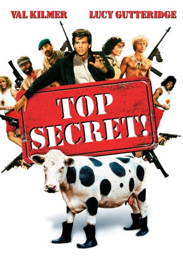
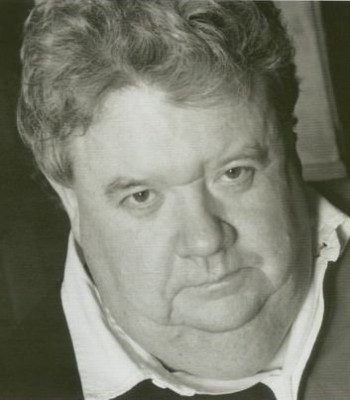
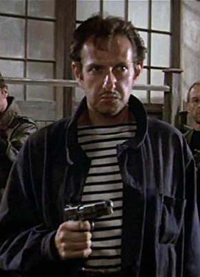

#1784 Top Secret
Alternativ: Top Secret!
 
 IMDB-Wertung: 7.2 / 10
IMDB-Wertung: 7.2 / 10  Metascore: 68
Metascore: 68 
Nick Rivers, ein amerikanischer Rock ’n’ Roll-Sänger (eine Parodie von Elvis Presley und den Beach Boys) reist zusammen mit seinem Manager nach Ostdeutschland, um auf einem Kultur-Festival aufzutreten. Allerdings weiß er zunächst nicht, dass das Festival als ein Ablenkungsmanöver dienen soll, damit die Ostregierung die NATO-U-Bootflotte bei einem Manöver in der Straße von Gibraltar sabotieren und damit das Kräfteverhältnis der Weltmächte einseitig verlagern kann, um Deutschland wieder zu „vereinen“.
Jahr: 1984
Dauer: 90 Minuten
FSK: 12
Land: USA Studio: Paramount PicturesTonspuren: DD2.0 - ,
Untertitel:
Auflösung: 720p (1280x720) Größe: 3481 MB
Genre: Komödie
Regisseur: Jim Abrahams, David Zucker, Jerry Zucker
Drehbuch: Jim Abrahams, David Zucker, Jerry Zucker, Martyn Burke
Soundtrack: Maurice Jarre
Darsteller:
 Val Kilmer als Nick Rivers
Val Kilmer als Nick Rivers- Peter Cushing als Bookstore Proprietor
 Jeremy Kemp als General Streck
Jeremy Kemp als General Streck Christopher Villiers als Nigel
Christopher Villiers als Nigel Warren Clarke als Colonel von Horst
Warren Clarke als Colonel von Horst Michael Gough als Dr. Paul Flammond
Michael Gough als Dr. Paul Flammond Jim Carter als Déjà Vu
Jim Carter als Déjà Vu Omar Sharif als Agent Cedric
Omar Sharif als Agent Cedric-  Ian McNeice als Blind Souvenir Vendor
- Lee Sheward als Young Nigel
- Richard Bonehill als Scarecrow
- Frank Jakeman als German Soldier , uncredited
 Derek Lyons als German Soldier , uncredited
Derek Lyons als German Soldier , uncredited- David Zucker als German Soldier in Prop Room , uncredited
- Jerry Zucker als German Soldier in Prop Room , uncredited
- Lucy Gutteridge als Hillary Flammond
-  Harry Ditson als Du Quois
- Eddie Tagoe als Chocolate Mousse
- Nancy Abrahams als Pregnant Woman
- Tristram Jellinek als Major Crumpler
 Billy J. Mitchell als Martin
Billy J. Mitchell als Martin- Major Wiley als Porter
 Gertan Klauber als Mayor
Gertan Klauber als Mayor- Richard Mayes als Biletnikov
- Vyvyan Lorrayne als Madam Bergerone
- Louise Yaffe als Cafe Diner
- Charlotte Zucker als Cafe Diner
- Susan Breslau als Cafe Diner
- Helen Kahan als Cafe Diner
 John Sharp als Maitre D'
John Sharp als Maitre D'- Michael Burlington als Waiter
- Marcus Powell als Little German
- Burton Zucker als Chef
- Richard Pescud als Priest
- John J. Carney als Klaus
- O.T. als Bruno
- Russell Sommers als Student
- Sara Montague als Crying Girl
- Gerry Paris als Back-Up Singer
- David Adams als Back-Up Singer
- Geoff Wayne als Back-Up Singer
- Steve Ubels als German Soldier
- Chas Bryer als German Soldier
 Mac McDonald als German Soldier
Mac McDonald als German Soldier- Mandy Nunn als Young Hillary
- Janos Kurucz als Wagon Driver
- Sydney Arnold als Albert Potato
- Dimitri Andreas als Latrine
- Michelle Martin als Der Pizzahaus Girl
- Nicola Wright als Der Pizzahaus Girl
Datei: X:\1984\Top Secret (1984, FSK12, 1280x720).mkv seit 19.08.2015
Festplatte: HD 1980-1986
 Es gibt insgesamt 46 Filme in der Gruppe '1984'
Es gibt insgesamt 46 Filme in der Gruppe '1984'